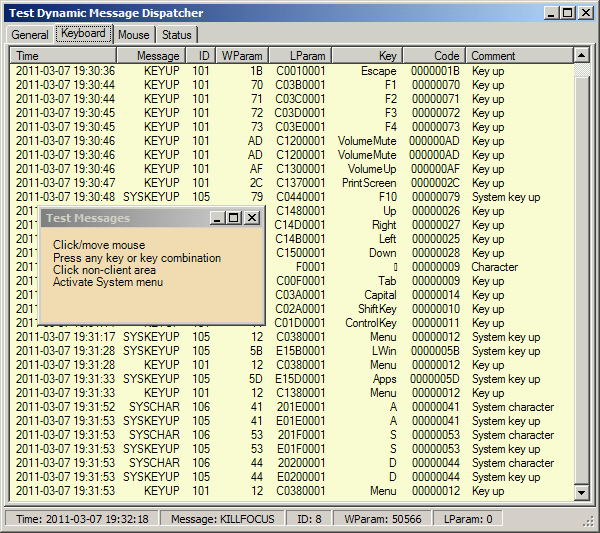

Table of Contents
1. Motivation
A long switch statement is an ugly thing. Not only does the tree levels of indentation and non-informative break statements look ugly and don't help readability, but using them can also be a considerable performance hit, because the case conditions should be checked one-by-one from top to button. Changing from "switch" to "if" statements does not help either. When a long if-then-else block is needed, the problems are the same. Unfortunately, there are many cases when long switch statements seem unavoidable. A typical example is writing a Windows message function from scratch. The number of cases can be about couple of hundreds; and many of them should be given their own specific processing.
At the same time, the problem can be easily resolved. Here is the idea. The linear brute-force running over the list of cases can be replaced with some advanced and effective search method. Such a method is readily available in the form of Dictionary. The values of the switch should be replaced with the (unique) dictionary keys, and the branches of the code — with delegate instances. The only problem is using this mechanism in a universal way.
This approach addresses both readability and performance. The method will segregate the population of the delegate invocation list with code from the invocation. The population of the dictionary with delegate instances and their invocation lists should be done only once (ideally — only once per Application Domain lifetime), but the invocation can be called many times, presented by only one line code, and will be very effective during run-time, especially for a long set of cases, each represented by a unique key. Let's see how it looks.
In this work I offer two generic classes which implement the idea in two different forms: a single-cast and multi-cast.
Before I explain how it works and can be used, let's look at the complete implementation.
2. Dynamic Method Dispatcher: Full Implementation First
Let's take a look at the class DynamicMethodDispatcher used to dispatch a delegate based on a key. This is a generic class, fully implemented:
using System.Collections.Generic;
public class DynamicMethodNotFoundException<KEY, MESSAGE> : System.Exception {
internal DynamicMethodNotFoundException(KEY key, MESSAGE message)
{ this.FKey = key; this.FMessage = message; }
public KEY KeyValue { get { return this.FKey; } }
public MESSAGE MessageValue { get { return this.FMessage; } }
KEY FKey; MESSAGE FMessage;
}
public abstract class DynamicMethodDispatcherBase<KEY, MESSAGE, RETURN> {
public delegate RETURN DynamicMethod(KEY key, MESSAGE message);
public int this[KEY key] {
get {
DynamicMethod method;
if (Dictionary.TryGetValue(key, out method))
return method.GetInvocationList().Length;
return 0;
}
}
KEY[] Keys {
get {
KEY[] result = new KEY[Dictionary.Keys.Count];
int current = 0;
foreach (KEY key in Dictionary.Keys) {
result[current] = key;
++current;
}
return result;
}
}
#region implementation
internal protected RETURN SingleCastInvoke(KEY key, MESSAGE message) {
DynamicMethod method;
if (Dictionary.TryGetValue(key, out method))
return method.Invoke(key, message);
throw new DynamicMethodNotFoundException<KEY, MESSAGE>(key, message);
}
internal protected bool SingleCastTryInvoke(KEY key,
MESSAGE message, out RETURN returnValue) {
DynamicMethod method;
bool success = Dictionary.TryGetValue(key, out method);
if (success)
returnValue = method.Invoke(key, message);
else
returnValue = default(RETURN);
return success;
}
internal protected Dictionary<KEY, DynamicMethod> Dictionary =
new Dictionary<KEY, DynamicMethod>();
#endregion implementation
}
public class DynamicMethodDispatcher<KEY, MESSAGE, RETURN> :
DynamicMethodDispatcherBase<KEY, MESSAGE, RETURN> {
public bool Add(KEY key, DynamicMethod method) {
if (Dictionary.ContainsKey(key)) return false;
Dictionary.Add(key, method);
return true;
}
public RETURN Invoke(KEY key, MESSAGE message)
{ return SingleCastInvoke(key, message); }
public bool TryInvoke(KEY key, MESSAGE message, out RETURN returnValue)
{ return SingleCastTryInvoke(key, message, out returnValue); }
}
A multi-cast variety of the same thing is the class MultipleInvocationDynamicMethodDispatcher. Unlike its single-cast counterpart, it supports a queue of delegates bound to the same key and returns an array of results, one element of array per delegate instance:
public class MuticastDynamicMethodDispatcher<KEY, MESSAGE, RETURN> :
DynamicMethodDispatcherBase<KEY, MESSAGE, RETURN> {
public delegate RETURN AccumulationMethod(
int index,
KEY key, MESSAGE message,
bool lastResultAvailable, RETURN lastResult, RETURN currentResult);
public void Add(KEY key, DynamicMethod method) {
DynamicMethod delegateInstance;
if (Dictionary.TryGetValue(key, out delegateInstance)) {
Dictionary.Remove(key);
delegateInstance += method;
} else
delegateInstance = method;
Dictionary.Add(key, delegateInstance);
}
public RETURN[] Invoke(KEY key, MESSAGE message) {
DynamicMethod delegateInstance;
if (Dictionary.TryGetValue(key, out delegateInstance)) {
System.Delegate[] invocationList = delegateInstance.GetInvocationList();
int index = 0;
RETURN[] returnValue = new RETURN[invocationList.Length];
foreach (System.Delegate method in invocationList) {
returnValue[index] = ((DynamicMethod)method)(key, message);
index++;
}
return returnValue;
} else
return null;
}
public RETURN Invoke(KEY key, MESSAGE message, AccumulationMethod accumulation) {
bool dummyFound;
return AccumulatedInvoke(key, message, accumulation, true, out dummyFound);
}
public bool TryInvoke(KEY key, MESSAGE message,
AccumulationMethod accumulation, out RETURN returnValue) {
bool found;
returnValue = AccumulatedInvoke(key, message, accumulation, false, out found);
return found;
}
void InvokeNoReturn(KEY key, MESSAGE message) {
SingleCastInvoke(key, message);
}
public bool TryInvokeNoReturn(KEY key, MESSAGE message) {
RETURN dummyReturnValue;
return SingleCastTryInvoke(key, message, out dummyReturnValue);
}
#region implementation
public RETURN AccumulatedInvoke(KEY key, MESSAGE message,
AccumulationMethod accumulation, bool throwException, out bool found) {
if (accumulation == null) {
if (throwException) {
found = true;
InvokeNoReturn(key, message);
} else
found = TryInvokeNoReturn(key, message);
return default(RETURN);
}
DynamicMethod delegateInstance;
found = Dictionary.TryGetValue(key, out delegateInstance);
if (found) {
System.Delegate[] invocationList = delegateInstance.GetInvocationList();
int index = 0;
RETURN lastResult = default(RETURN);
foreach (System.Delegate method in invocationList) {
bool lastResultAvailable = index > 0;
RETURN currentResult = ((DynamicMethod)method)(key, message);
lastResult = accumulation(index, key, message,
lastResultAvailable, lastResult, currentResult);
index++;
}
return lastResult;
} else
if (throwException)
throw new DynamicMethodNotFoundException<KEY, MESSAGE>(key, message);
else
return default(RETURN);
}
#endregion implementation
}
First of all, I want to discuss my design of the generic method being dispatched: DynamicMethod. Why exactly two input parameters and a return value? Why not just one parameter? Why not more? Well, this is because it enables the most universal approach. The key parameter should be isolated from any other input data, because it is distinctly special: this is a unique key used to store the delegate instances in the dictionary. This parameter along is not enough, because the application may require some data input which is not necessarily related with the key. This "free" parameter called message can carry any amount of data as its type can be an array of other data elements or any other collection of data. One interesting application of the technique can be employed when the type MESSAGE is System.Type, see 6.
3. DynamicMethodDispatcher Class by Usage
Now I would like to explain how the simpler one of the two Dispatcher classes works, starting from its usage. Please see the source code of the demo project TestMessageDispatching.exe. This is a Windows .NET application using System.Windows.Forms and demonstrates raw Windows message processing.
To demonstrate how the Dynamic dispatcher replaces the long (really long in this case) switch statement, many different Windows messages are processed in different ways: some send message data in different message-specific forms to the UI to be logged in different list views (depending on the message IDs) with different comments, some cause sounds, some do both. For some status messages, events are counted and displayed in the list view: counted are the number of application activations and deactivations (by Alt-TAB, for example) and also the events got from losing keyboard focus in the message-handling Form; event counters are the fields of this form.
First, here is how the Dispatcher is defined and initialized:
using MessageDispatcher =
SA.Universal.Technology.DynamicMethodDispatcher<WindowsMessage, MessageInfo, bool>;
public partial class FormMessageHandler {
static int activateCount = 0;
static int focusCount = 0;
static int nonClientActivateCount = 0;
MessageDispatcher MessageDispatcher = new MessageDispatcher();
}
As the using clause instantiates generic type parameters, it defines the signature of the Dynamic Method. The type WindowsMessage is the enumeration type containing Windows message IDs, and MessageInfo is a class representing the structure of Windows messages in a .NET way, with union of different semantic parameters through the use of the attributes System.Runtime.InteropServices.StructLayoutAttribute and System.Runtime.InteropServices.FieldOffsetAttribute. Download and see the full source code for more information.
This is how messages are captured and the Dispatcher is invoked:
public partial class FormMessageHandler {
protected override void DefWndProc(ref Message m) {
bool ignore;
if (MessageDispatcher.TryInvoke((WindowsMessage)m.Msg,
MessageInfo.FromMessage(m), out ignore)) {
if (!ignore)
base.DefWndProc(ref m);
} else
base.DefWndProc(ref m);
}
}
The return value of Boolean type is used to indicate if the default Windows procedure (inherited from the base class) should be called, or ignored, effectively cancelling the processing of a message. There are two forms of invocation method of the class DynamicMethodDispatcher, depending on the handling of the situation when a key (WindowsMessage in this example) is not found in the method dictionary. The method Invoke returns a return result of the dynamic method if one is found in the dictionary, and otherwise throws an exception of the generic type DynamicMethodNotFoundException.
The message processing is invoked in one line and completely replaces the long switch statement. Now, the long sequence still needs to be somewhere else. Right, the Dynamic methods should be created and added to the dictionary. What's most important about it? It is done only once during the lifetime of the application. Invocation is done many times and is more efficient compared to the switch statement. If the number of cases is significant, it can be much more effective: switch statement works linearly, while the dictionary search time is of the order of O(0) (see "Big O Notation"), that is, the calculation time does not depend on the size of the dictionary (asymptotically, for large number of elements).
Here is the short fragment of this long code:
MessageDispatcher.Add(WindowsMessage.NCACTIVATE, (key, msg) => {
ShowStatusMessage(Time.Now, msg,
GetActivationMessage(msg, ref nonClientActivateCount),
"Non-client activation");
return false;
});
MessageDispatcher.Add(WindowsMessage.ACTIVATEAPP, (key, msg) => {
ShowStatusMessage(Time.Now, msg, GetActivationMessage(msg, ref activateCount),
"Application activation");
return false;
});
MessageDispatcher.Add(WindowsMessage.SETFOCUS, (key, msg) => {
focusCount++;
ShowStatusMessage(Time.Now, msg, string.Empty,
string.Format("Focused: {0}", focusCount));
return false;
});
MessageDispatcher.Add(WindowsMessage.KILLFOCUS, (key, msg) => {
ShowStatusMessage(Time.Now, msg, string.Empty, "Focus lost");
return false;
});
MessageDispatcher.Add(WindowsMessage.KEYUP, (key, msg) => {
ShowKeyboardMessage(Time.Now, msg, "Key up");
Console.Beep(360, 30);
return false;
});
MessageDispatcher.Add(WindowsMessage.KEYDOWN, (key, msg) => {
Console.Beep(400, 30);
return false;
});
MessageDispatcher.Add(WindowsMessage.CHAR, (key, msg) => {
ShowKeyboardMessage(Time.Now, msg, "Character");
return false;
});
MessageDispatcher.Add(WindowsMessage.SYSKEYUP, (key, msg) => {
ShowKeyboardMessage(Time.Now, msg, "System key up");
Console.Beep(200, 20);
return false;
});
The important thing is using the anonymous method here. Moreover, its lambda form is used. I have two notes about it. First, if you needed to make an instance of the anonymous delegate before passing it to MessageDispatcher.Add, you would require the types of the parameters:
SA.Universal.Technology.DynamicMethodDispatcher<WindowsMessage,
MessageInfo, bool>.DynamicMethod method =
(key, msg) => {
ShowStatusMessage(Time.Now, msg,
GetActivationMessage(msg, ref nonClientActivateCount),
"Non-client activation");
return false;
};
The lambda form of the delegate uses type inference here, but the type of the target delegate still has to be defined. It is not required in the case of MessageDispatcher.Add, because the delegate type is inferred from the parameter type of this method, hence the argument types of the delegate method (WindowsMessage and MessageInfo) are also inferred.
The lambda forms cannot be found in the source code I provide, because I support compatibility with C# v.2.0 as well (see 7) which could not use lambda expressions. In this case, adding a dynamic method look just a bit wordier:
MessageDispatcher.Add(WindowsMessage.NCACTIVATE,
delegate(WindowsMessage key, MessageInfo msg) {
ShowStatusMessage(Time.Now, msg,
GetActivationMessage(msg, ref nonClientActivateCount),
"Non-client activation");
return false;
});
Even if the same delegate method should be used for multiple messages, the anonymous delegate can still provide the reuse:
WindowsMessage[] mouseMessages = new WindowsMessage[] {
WindowsMessage.LBUTTONDBLCLK,
WindowsMessage.NCRBUTTONDOWN,
WindowsMessage.NCRBUTTONUP,
};
foreach (WindowsMessage wm in mouseMessages)
MessageDispatcher.Add(wm, , (key, msg) => {
ShowMouseMessage(Time.Now, msg, string.Empty);
return false;
});
4. MultipleInvocationDynamicMethodDispatcher
The full source code of the multiple-invocation version of DynamicMethodDispatcher is already shown above (see 2).
The difference between DynamicMethodDispatcher and its multiple-invocation version is the ability to add several handlers to a delegate instance found by the same key. If a new handler is added by an existing key, the operation is always successful. All handlers are accumulated on the invocation list of the same delegate instance found by a key.
A special concern of the multiple-invocation version is processing the method result called by the different handles of the same invocation list. They can be different, so we may need to do something to avoid losing them.
Before we examine how it works, we need a bit of some advanced knowledge on the nature of delegates.
4.1 On the Nature of Delegate Instance
Let's look at an instance of the delegate. When you get its type via GetType and examine it using Reflection, it will show that the type of the instance is... a class — its Type returns the IsClass property value of true. It supports a lot of stuff and, in particular, it returns the invocation list of the handlers via the method GetInvocationList. What happens when we use the "=" or "+=" operators to add a handler to the invocation list?
If we assign a delegate instance to another delegate instance, then they become the same object, we can test it (see the code below). But what happens if we "assign" a handler to the delegate instance which was not yet initialized (null) using "="? No wonder, it is created and initialized, its invocation list length becomes 1. Can we add another handler to the same delegate instance using "+=". Surprisingly, no!
Let's examine identity and referential identity and referential identity of the delegate instance using the "==" operator and object.ReferenceEquals:
delegate int TestDelegate(string name);
delegate string FormatEqual(bool value);
static void ReportDelegateEquivalence(Delegate left, Delegate right) {
FormatEqual formatEqual =
delegate(bool value) { if (value) return string.Empty; else return "NOT"; };
System.Console.WriteLine(
"Delegates are {0} equal, they are referentually {1} equal",
formatEqual(left == right),
formatEqual(object.ReferenceEquals(left, right)));
}
static void TestDelegateEquivalence() {
TestDelegate delegate1 = delegate(string name) { return 1; };
TestDelegate delegate2 = delegate(string name) { return 1; };
ReportDelegateEquivalence(delegate1, delegate2);
delegate1 = delegate2;
ReportDelegateEquivalence(delegate1, delegate2);
delegate2 += delegate(string name) { return 2; };
ReportDelegateEquivalence(delegate1, delegate2);
}
We can see that a delegate instance changes its referential identity as a result of the "+=" operator! This happens because the delegate instances are immutable, pretty much like strings. You cannot add a handler to a delegate instance. Instead, a brand-new delegate instance is created with the invocation list copied from the delegate instance stored in the same variable with added (or removed) handler; then the resulting delegate instance is assigned to the same variable. The purpose of such behavior is threading. What happens is one thread is adding a handler to a delegate instance while some other thread is performing the invocation of the same delegate? To avoid a potentially fatal clash, both procedures would have to be inter-locked until either of the procedures is complete. Having delegate instances immutable improves parallelism.
I'm very grateful to Nishant Sivakumar who explained to me the purpose of the immutable nature of delegate instances.
Now, this feature would defeat the obvious strategy working with the registry if we tried to "update" the delegate instance stored in the registry. It would not actually change anything, as the change would have been done on another, new instance of the delegate. Instead, the code of MultipleInvocationDynamicMethodDispatcher removes a delegate instance from the dictionary, "adds" a new handler (a brand new delegate instance is actually created), and adds this new instance to the dictionary again. See the implementation of MultipleInvocationDynamicMethodDispatcher.Add.
Interesting (and quite natural) that the type of the delegate instance is created on the fly, as you can see by its full name delegate1.GetType().FullName. What is also interesting is, the base class of the run-type of the delegate instance is System.MulticastDelegate. A delegate instance becomes multicast as soon as it is initialized after adding the very first handler using the operator "=". Before it happens, the delegate instance is not initialized; and its value is null. C# syntax will not allow applying the operator "+=" before the instance is initialized; the only way to initialize it is the operator "=". All the handlers can be accessed via the instance method GetInvocationList. It's easy to checkup that the run-time types of the elements of the invocation list are also based on the type System.MulticastDelegate.
That raises an interesting question. It means that we can add a multi-cast delegate instance to the invocation list of another multi-cast delegate instance using the operator "+=". Will we obtain a tree of delegate instances? No!
This is easy to check up. Let's note that by the end of the method body TestDelegateEquivalence the length of the invocation list of delegate1 is 1 and the length of the invocation list of delegate2 is 2. Let's add another line at the end:
delegate1 += delegate2;
When we examine the delegate list of delegate1 after this operation, we will find that it has still got the flat invocation list consisting 3 elements each of length 1. The procedure of re-creation of the new (immutable) delegate instance re-creates the invocation list in the flat form; you cannot create a tree or other "pathological" structures. For example, it is not possible to create an invocation list of length 0. It is also not possible to have a member of the invocation list which is null or has a length other than 1.
It looks like operations on the delegate instances use much more cunning algorithms than one could think of based on the usual documentation!
4.2 Return Values
Let's consider how we can return values of the generic type RETURN as a result of an invocation. The simplest method is discarding the return values of all the handlers using the method InvokeNoReturn or TryInvokeNoReturn. The difference between these two methods is that the second one does not throw an exception when a key is not found in the dictionary, see 5. Note that this method uses exactly the same implementation as the method DynamicMethodDispatcher.Invoke.
The opposite approach is the method Invoke(KEY key, MESSAGE) which returns all the values returned by each handler in an array of type RETURN[]. The convenience of this method is that there no need for a special TryInvoke method which does not throw exceptions. When a key is not found in the dictionary, the method returns null. The implementation of this method cannot use a predefined delegate invocation method which discards all the return values returned by each handler. Instead, to get every value returned by each handler, the implementation invokes each individual element of the invocation list returned by the delegate instance method GetInvocationList. See the source code for more details.
The most sophisticated method of returning only one return value is the accumulation of the return results of all of the elements of the invocation list. See the delegate type AccumulationMethod and the method Invoke(KEY, MESSAGE, AccumulationMethod). For example, let's see how to return the product of all return values of type double returned by the elements of the invocation list:
var dispatcher = new MuticastDynamicMethodDispatcher<int, string, double>();
dispatcher.Add(3, (key, value) => { return key; });
dispatcher.Add(3, (key, value) => { return System.Math.Pow(key, System.Math.PI); });
dispatcher.Add(3, (key, value) => { return double.Parse(value); });
dispatcher.Add(5, (key, value) => { return 1d; });
dispatcher.Add(5, (key, value) => { System.Console.WriteLine(key); return key; });
dispatcher.Invoke(
3, "11.2",
delegate(
int index,
int key, string message,
bool lastResultAvailable, double lastResult, double currentResult) {
if (lastResultAvailable) return currentResult;
else return lastResult * currentResult;
});
Again, for C# v.2.0, it will be a bit wordier:
MuticastDynamicMethodDispatcher<int, string, double> dispatcher =
new MuticastDynamicMethodDispatcher<int, string, double>();
dispatcher.Add(3, delegate (int key, string value) { return key; });
dispatcher.Add(3, delegate(int key, string value)
{ return System.Math.Pow(key, System.Math.PI); });
dispatcher.Invoke(
3, "11.2",
delegate(
int index,
int key, string message,
bool lastResultAvailable, double lastResult, double currentResult) {
if (lastResultAvailable) return currentResult;
else return lastResult * currentResult;
});
5. What if a Key is not Found in the Dictionary?
Let's classify all the methods of both classes by their behavior depending on the presence of some key in the dictionary of dynamic methods.
First of all, the implementations of the methods DynamicMethodDispatcher.Add(KEY, DynamicMethod) and MuticastDynamicMethodDispatcher.Add(KEY, DynamicMethod) are different. If a key is already present in the dictionary, the first method has no effect and returns false. The second method is always successful. Please see the implementations of both.
Now, let's classify all the invocation methods of both classes.
These methods will throw the exception DynamicMethodNotFoundException when a key is not found in the dictionary of dynamic methods:
DynamicMethodDispatcher.Invoke(KEY, MESSAGE);MuticastDynamicMethodDispatcher.Invoke(KEY, MESSAGE, AccumulationMethod);MuticastDynamicMethodDispatcher.InvokeNoReturn(KEY, MESSAGE).
These methods will not throw an exception when a key is not found in the dictionary of dynamic methods; please read the comments on how this situation is recognized by a caller:
DynamicMethodDispatcher.TryInvoke(KEY, MESSAGE, out RETURN); if key is not found, this method will return false, our RETURN value should be ignored.MuticastDynamicMethodDispatcher.Invoke(KEY, MESSAGE); if key is not found, this method will return null, otherwise it will return the array with return values from all elements of the invocation list.MuticastDynamicMethodDispatcher.TryInvoke(KEY, MESSAGE, AccumulationMethod, out RETURN); if key is not found, this method will return false, our RETURN value should be ignored.MuticastDynamicMethodDispatcher.TryInvokeNoReturn(KEY, MESSAGE); if key is not found, this method will return false.
If you look at the downloadable source code you will find comprehensive XML comments on each public method.
6. Complement OOP or Abuse it?
Can the keys of the Dynamic Method Dispatcher be types? Yes of course, but.. everyone who understands Object-Oriented technology well would immediately recognize a bad anti-pattern which would defeat the purpose of OOP. In this anti-pattern, the tagging of the type replaces the use of inheritance of the class hierarchy based on a common abstract interface implemented using late binding. In the case of .NET, instances of the type System.Type can play the role of such tags.
This matter is not so simple though. First, Object-Oriented Programming technology is not free from limitations and methodological problems. For example, consider the Circle-Ellipse Problem. This is just one case when object-oriented development can run into a dead end, which actually could be seen from the very beginning.
I want to illustrate the technique leading to such a tagging approach on some real-life examples. One of the problems when traditional OOP does not provide a natural solution is parallel hierarchy. Let's consider some real-life situations.
6.1. Use-case: Parallel Hierarchy Problem
When we create a CAD model which is used for CAM and SCADA applications, we're trying to create a comprehensive model so its instances would cover the full range of all thinkable designs possible in the application field. It also should be used as an internal data representation of all designs which we can import from many third-party models. Modeling of such data schema is not a big problem: all legacy systems have their limitations which we can overcome, as our new model can be designed as a superset of all known features. We only face a problem when we do the translation of the legacy or third-party models required by the functionality of our import plug-in. The problem is that the set of legacy graphic primitives is built as a separate object hierarchy. We don't want to create a permanent dependency on the legacy data model. The root of the problem is that classical single-parent inheritance has the structure of a tree. In the case of parallel hierarchies, we need to build a mapping between the two. From the stand point of classical OOP, it can be considered as some ad-hoc mapping code. With Dynamic Method Dispatcher, it does not have to be ad-hoc though.
Let's consider the two parallel hierarchies: one representing our comprehensive CAD model (shown partially) and the hierarchy of the graphical primitives presented by the AutoDesk DWG files:
public abstract class Shape { }
public class PolyLine2D : Shape { }
public class PolyLine3D : Shape { }
public class Ellipse : Shape { }
public class EllipticArc : Shape { }
public class Text : Shape { }
public class AcadPrimitive { }
public class AcadPolyLine2D : AcadPrimitive { }
public class AcadPolyLine3D : AcadPrimitive { }
public class AcadCircle : AcadPrimitive { }
public class AcadArc : AcadPrimitive { }
public class AcadText : AcadPrimitive { }
public class AcadMultilineText : AcadPrimitive { }
Now, the mapping code should implement some interface used to translate any third-party model to our internal representation:
public interface IModelTranslator { }
public class DwgModelTranslator :
DynamicMethodDispatcher<System.Type>,
IModelTranslator {
public DwgModelTranslator() {
Add(typeof(AcadPolyLine2D), PolyLine2D);
Add(typeof(AcadPolyLine3D), PolyLine3D);
Add(typeof(AcadCircle), PolyLine3D);
Add(typeof(AcadArc), PolyLine3D);
Add(typeof(AcadText), Text);
Add(typeof(AcadMultilineText), Text);
}
Shape PolyLine2D(System.Type acadType, AcadPrimitive acadPrimitive) {
return new PolyLine2D();
}
PolyLine3D PolyLine3D(System.Type acadType, AcadPrimitive acadPrimitive) {
return new PolyLine3D();
}
Shape Circle(System.Type acadType, AcadPrimitive acadPrimitive) {
return new Ellipse();
}
EllipticArc Arc(System.Type acadType, AcadPrimitive acadPrimitive) {
return new EllipticArc();
}
Shape Text(System.Type acadType, AcadPrimitive acadPrimitive) {
return new Text();
}
Shape TranslatePrimitive(AcadPrimitive primitive) {
return this.Invoke(primitive.GetType(), primitive);
}
}
Pay attention to the fact that we handle the situation when there is no one-to-one correspondence between the hierarchies. Also, the same method can be re-used to translate different AutoDesk primitives to a single CAD Shape which is more universal.
Using the legacy and importing are not the only ares where parallel hierarchies can present a problem for classical OOP design. There are different classes of problems when mapping between hierarchies is required. It happens when different aspects of the same application fields need to be separated. For example, a pure data model deals with just data transformation and persistence; the graphical presentation of the same model deals with such aspects as mapping the graphical presentation system (example: WPF), scaling, panning, showing separate layers, etc. When all of the above represents a CAD model, it should be separated from the CAM aspects of the same model, and so on.
The structure based on Dynamic Method Dispatcher provides mapping between the parallel models thus complementing the structures based on pure tree inheritance relationship.
6.2. Dynamic Method Dispatcher as Virtual Method Table
Let's return back to the concerns of using the tagging approach which is considered by some as abuse of OOP.
The universal character of Dynamic Method Dispatcher functionality makes such tagging-based techniques not completely ad-hoc. If you look at how the Dynamic Method dictionary works in the Dynamic Method Dispatcher, you will notice that this mechanism resembles the Virtual Method Table (VMT) of traditional OOP. More exactly, it can be considered as the variant of a technology for Dynamic Dispatch in a wider sense understood in the theory of polymorphism. As in classical OOP based on the Virtual Message Table, the delegate call is done indirectly. In classical VMT, the call is dispatched using the address offset in the table. With the dictionary of Dynamic Method Dispatcher, a delegate is accessed by the dictionary key, which consumes more CPU time, but both mechanisms still deliver the speed of O(0) (see "Big O Notation"). In both mechanisms, dispatching selects a method implementation during run-time; the set of methods to be selected includes the method of the same signature, but Dynamic Method Dispatcher also allows for covariance and contravariance in the sense explained here.
The use of the data structure (a table in the case of VMT, a dictionary in the case of Dynamic Method Dispatcher) is very different. In the case of VMT, there is one table per class. The selection is performed at the moment of call among the set of identical methods of the same signature and the same class hierarchy. The content of all tables is fully defined during compile time. In the case of Dynamic Method Dispatcher, the set of methods of the same signature is totally arbitrary. It is populated explicitly during run time and may be absolutely unknown during run-time. (For example, imagine that it is done with the use of a random number generator.)
The mechanism of Dynamic Method Dispatcher can be considered as another mechanism of dynamic dispatch, generalizing and complementing the classical OOP mechanism based on VMT.
The major reason for these differences is that the classical OOP mechanism based on VMT is always embedded in object-oriented languages. Such embedded implementations do exist. I want to dedicate a separate section to the explanation of the cultural and technological roots of my design of Dynamic Method Dispatcher. In fact, I did not just "invent" it all from scratch. Not at all.
6.3. On the History of the Idea
A mechanism is very close to the mechanism of Dynamic Method Dispatcher was created in Borland Delphi and VCL library. Presently, this is used in Embarcadero Delphi. Please see this manual.
Let's consider a short sample from this document:
TFoo = class
procedure IAmAStatic;
procedure IAmAVirtual; virtual;
procedure IAmADynamic; dynamic;
procedure IAmAMessage(var M: TMessage); message wm_SomeMessage;
end;
In this Delphi Pascal class, two methods provide exactly the same functionality using different mechanisms: IAmAVirtual uses virtual mechanism based on VMT while IAmADynamic uses an alternative mechanism based on Dynamic Method Table (DMT), where the methods are dispatched using auto-generated unique identifiers of the 32-bit integer type as keys. When a dynamic method is overridden in a derived class, the new class uses a different instance of DMT where the overridden method is associated with the same key. According to Borland and Embarcadero documentation, DMT is less memory consuming but the dispatching is slower. I think it can be understood based on the explanation of the operation of the very similar Dynamic Method Dispatcher.
The third method IAmAMessage is very different. It also uses DMT for dispatching, but the key value is hard-coded by the developer of the class. In this sample, it can be one of the Windows message IDs. The type TMessage is not the only type which would work with this mechanism. This form of method only requires a by-reference parameter of any structure which is started from the key of the 32-bit integer type which will be passed to the called method as a result of dispatching. Also, this class does not have to dispatch Windows messages. You can use it for any purpose using a special predefined method Dispatch. Using this method specifically for Windows messages is just one of the applications of the dispatching mechanism used in some UI-related classes like Form.
I would like to note that the Delphi DMT mechanism is not very flexible for dispatching by the key because there is only one predefined key type. Also, using message directives is not completely safe because correctness of the method parameter is based on the assumption that the user provides the correct parameter type. The implementation of Dynamic Method Dispatcher for .NET I provide is completely safe and is much more flexible and robust.
7. Building the Code and Compatibility
The code is provided for Microsoft .NET versions 2.0 to 4.0. The solutions DynamicMethodDispatcher.2005.sln, DynamicMethodDispatcher.2008.sln, and DynamicMethodDispatcher.2010.sln allow for building the code using the corresponding version of Microsoft Visual Studio.
The code can be built in batch mode using the batch files build.2005.bat, build.2008.bat, and build.2010.bat (build using MSBuild.exe of the respective formats of the Visual Studio solution file). The batch build does not require an installed copy of Visual Studio or any other development environment — it only uses the .NET redistributable package.
The build creates two executables for two configurations (Debug and Release are separate output directories: .\bin.Debug and .\bin.Release):
- SA.Universal.Technology.dll: contains classes
MuticastDynamicMethod and MuticastDynamicMethodDispatcher. - TestMessageDispatching.exe: demo/test application described in 3. This application can only run on Windows as it demonstrates processing of raw Windows messages.
7.1. Compatibility: Microsoft .NET
Both library and demo/test application code is backward-compatible with Windows versions starting from Windows 2000 (with .NET Framework v.2.0) and versions of the .NET Framework starting from v.2.0.
7.2. Compatibility: Mono
The library should be compatible with Mono on all platforms (tested on Mono v. 1.2.6 and v. 2.4.4 on Linux), but the demo/test application can work only on Windows, as I explained above.
8. Conclusions
The concept of Dynamic Method Dispatcher introduced in the present article is very powerful and can be used to considerably improve performance and maintainability of the code in a number of situations. It could be used to complement traditional OOP design in situations where the requirements push the limitations of OOP.
However, this approach should no way be considered as a method superior to more traditional techniques. Instead, it should be considered as a useful addition to the developer's palette of expressive capabilities.
9. Credits
I created the code of the first variant of Dynamic Method Dispatcher several years ago, and used its preliminary single-invocation version for different applications. The idea of writing this article came from a question at the CodeProject Questions and Answers forum. I put forward the idea in response to the question by Dalek Dave on January 18, 2010. Dalek is a prominent CodeProject expert himself. Later on, several other experts encouraged me to write an article based on my idea. The first person who gave me the idea of writing this article was Marcus Kramer.
During my work on the article, I added many important features, including the brand new class MuticastDynamicMethodDispatcher, and essentially improved my understanding of the internals of .NET delegates. When I detected the read-only nature of delegate instance, Nishant Sivakumar was the one who explained to me the importance of it (see 4.1). Thank you very much, Nish!
I'm grateful to everyone who expressed interest in this work. Hope my work can match the expectations. :-)